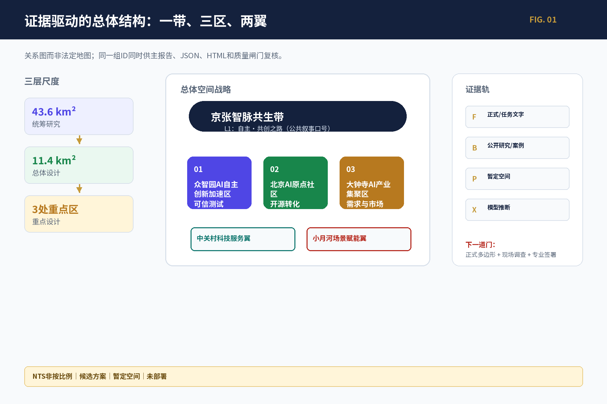
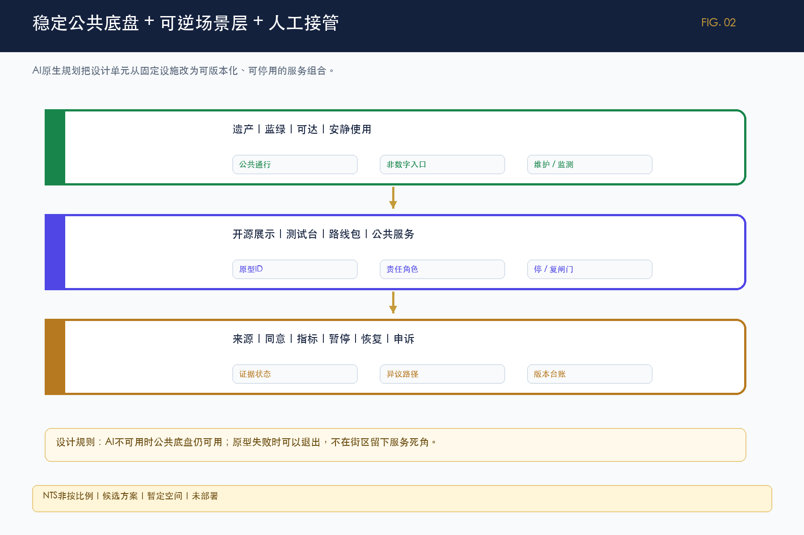
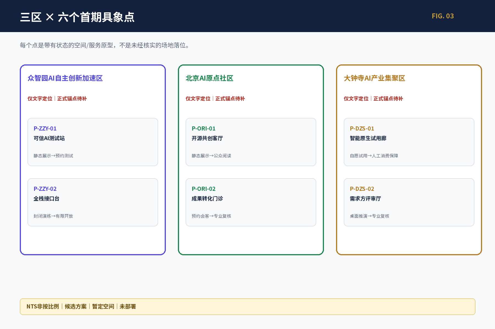
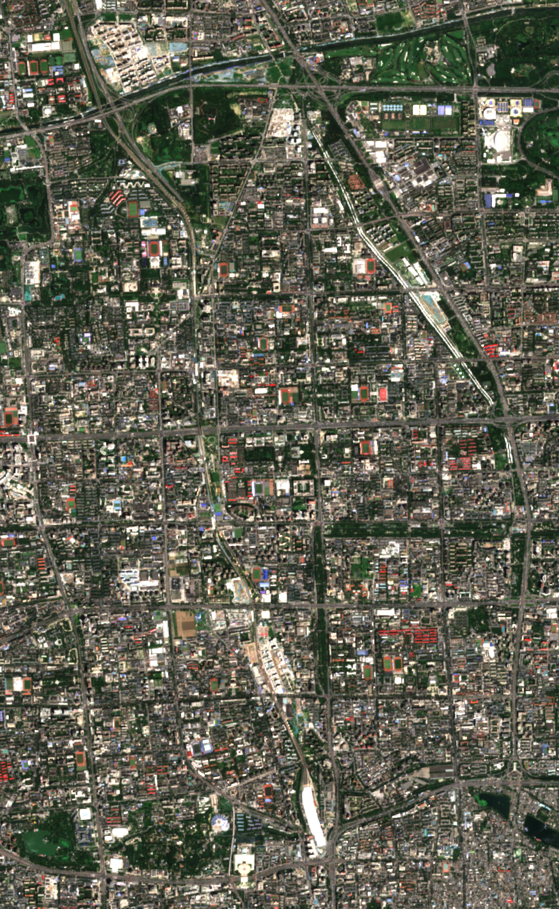
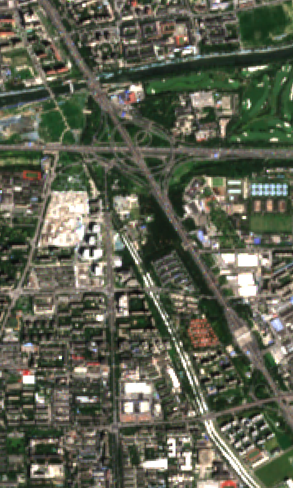
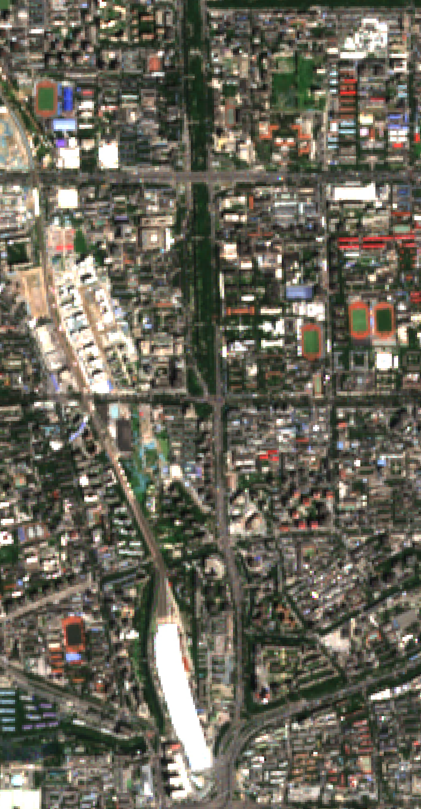
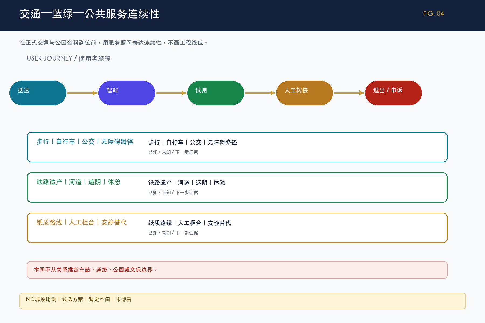
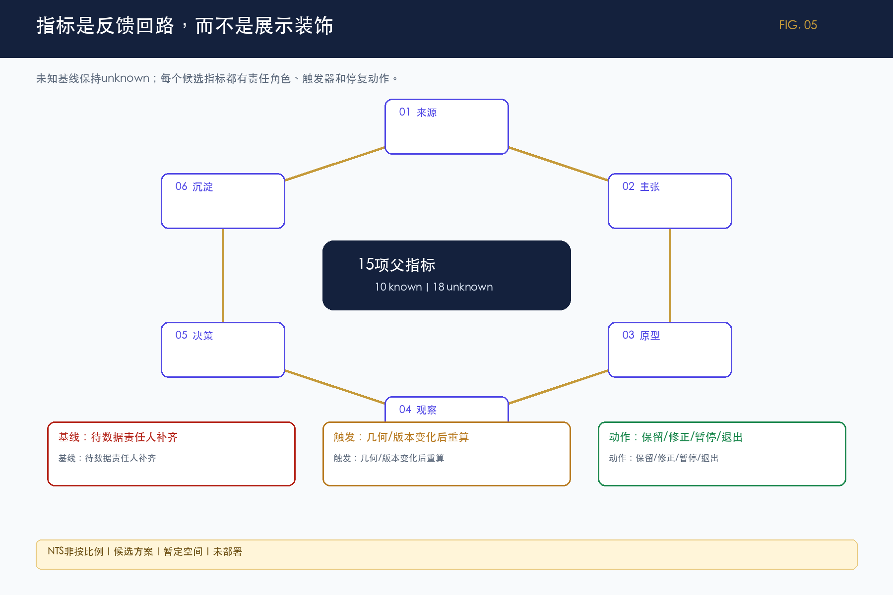

agent.1
概念 / 识别系统
京张智脉共生带 + L0—L5命名树 + Logo构图语法
候选、状态与权利门；不冒充最终VI
六类任务的证据化可视成果：关系图、场景卡、原型目录、运营闭环与可追溯状态。
这是离线、无追踪的研究型交互。按钮改变场景卡显隐，画布只显示三片区与六个点的关系，不生成坐标或工程路线。
以下导航词与官方视觉校验逐项对应；数字均标注状态，不把暂定几何当作正式控制值。
一张关系图回答‘怎么组织’，五张证据图回答‘凭什么这样组织’。图件不替代正式边界。

每项任务均给出核心判断、具象输出和边界；不是‘应当完成’的任务说明。
京张智脉共生带 + L0—L5命名树 + Logo构图语法
7个案例 → 研究/开源 → 测试 → 市场 → 知识
13场景、8用户、6原型、非数字替代
3地标原型 + 12公共空间组件
百年铁路—中关村—AI新文化三层非因果叙事
19项日周季年活动 + 六段转化闭环
空间战略名统一为‘京张智脉共生带’，‘自主·共创之路’是L1公共叙事口号；七个全球案例只用于机制比较。

重点区只表达功能和服务原型，当前不把暂定占位升级为正式坐标。

每张卡把问题、动作、用户、观察信号和准入/停止条件放在同一屏；这些是候选原型，不是已落位工程。
主要使用者：科研/创业团队；测试与安全人员
最小动作：开放验证桌 → 受控测试舱候选
观察信号：材料、数据与风险完整性；人工接管演练；退出清理
准入/停止：责任人、消防/设备/数据授权未核前只做离线推演
概念候选 / provisional_area_text_only主要使用者：项目团队；需求方；公众代表
最小动作：问题卡—资源卡—责任—停复/退出账本
观察信号：状态公开率；停止清理率；线下任务完成率
准入/停止：无治理章程、人工责任或申诉路径不得开放
概念候选 / non_spatial_service主要使用者：开发者；学生；居民；非数字参与者
最小动作：人工前台 + 每周开源桌 + 纸质资源目录
观察信号：许可完整率；无障碍可达；维护响应；纠错/撤回闭环
准入/停止：内容来源或权利不清即撤下或只显示索引
概念候选 / provisional_area_text_only主要使用者：需求方；研究者；创业团队；IP/法务/测试角色
最小动作：问题卡 → 证据成熟度分诊 → 人工转介
观察信号：首次转接时间；责任人确认率；退回原因；90日维护人
准入/停止：不承诺融资、入驻或采购；权属和真实需求不清则退回
概念候选 / provisional_area_text_only主要使用者：消费者；自愿商户；运营与消费权益人员
最小动作：自愿单项服务 + 普通服务保底 + 30日候选试用
观察信号：知情拒绝率；客服响应；投诉与数据清理闭环
准入/停止：不得默认画像、自动定价或隐藏人工；公平/隐私不明即停
概念候选 / provisional_area_text_only主要使用者：通勤者；老人/残障人士；需求方；交通/无障碍专业
最小动作：纸质四象限任务走查 → 问题单 → 专业复核
观察信号：首次到达任务完成；无障碍中断点；责任回应率
准入/停止：站口、道路和路权未核验不做工程结论
概念候选 / text_only_pending_official_anchor五幅 Sentinel-2 L2A 图仅用于背景观察、范围关系和问题发现；正式多边形、道路、权属和工程条件到位后必须重裁、叠合和复算。

仅背景观察 / 不由像元推导边界
Sentinel-2 L2A · 2026-07-15 · 研究背景图；provisional，不是法定底图。
纵向关系观察 / provisional study placeholders
Sentinel-2 L2A · 2026-07-15 · 研究背景图；provisional，不是法定底图。
背景观察 / 载体与边界待核
Sentinel-2 L2A · 2026-07-15 · 研究背景图；provisional，不是法定底图。
背景观察 / 权属与锚点待核
Sentinel-2 L2A · 2026-07-15 · 研究背景图；provisional，不是法定底图。
背景观察 / 站口关系与道路待核
Sentinel-2 L2A · 2026-07-15 · 研究背景图；provisional，不是法定底图。场景卡同时写明使用者、动作和停复状态；医疗、教育、商业不做诊断、录取、信用或消费终审。
用户：developer / professional reviewer
桌面推演→受控测试用户：developer / resident
离线演示→有限预约用户：developer / student
静态展示→人工共创用户：student / resident
纸质入口→教师/人工支持用户：developer / public reader
静态展示→公众阅读用户：contributor / public
署名核验→可撤回用户：resident / caregiver
公开信息→人工转接用户：resident / visitor
纸质路线→人工讲解用户：shopper / operator
自愿试用→人工消费保障用户：older / disabled user
观察→专业复核用户：international visitor
双语展示→人工接待用户：public / enterprise
匿名浏览→授权演示用户：community / operator
活动→复盘沉淀三地标、12组件、三层非因果文化叙事、五类导览与19项日周季年活动共同形成‘朝圣地’的持续使用条件。
均为可撤、可纠错、可人工接管的公共空间原型；不绑定未核实点位。
铁路文化、中关村文化和AI新文化不写成未经证实的因果史；路线先做文本/纸本版本。
19项活动均有角色、依赖、指标、停止、恢复和重启条件；真实主办方和基线仍unknown。

结果不是一张静态终图，而是可供公众、规划师、运营者和机器继续使用的离线成果集合。
